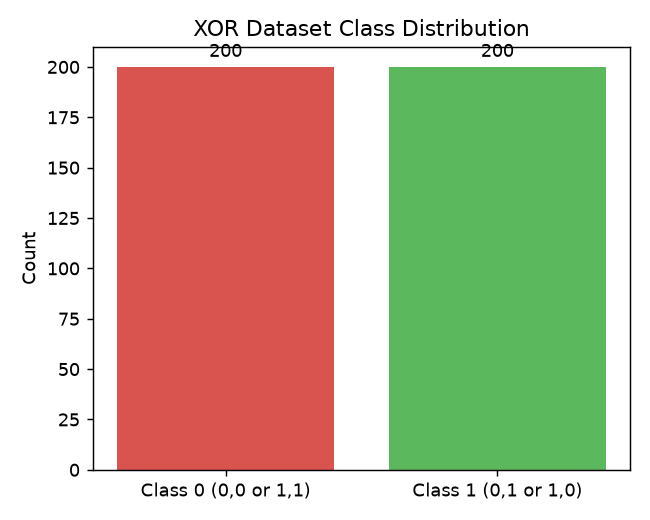
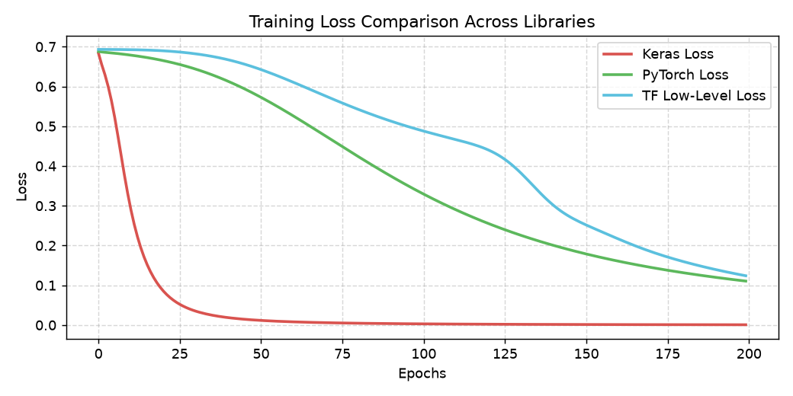
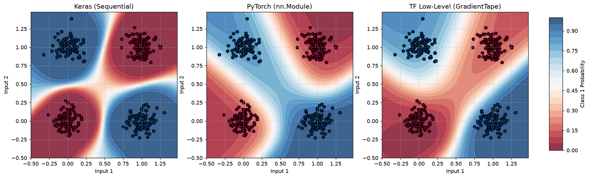

Aim: To solve the non-linear XOR classification problem using a Multi-Layer Perceptron (MLP) implemented in three distinct deep learning libraries: Keras, PyTorch, and TensorFlow low-level API. Additionally, to evaluate models using Stratified 5-Fold Cross-Validation, visualize decision boundaries, and analyze training dynamics.
The standard XOR problem consists of 4 data points. To apply meaningful machine learning validation (like K-Fold cross-validation) and evaluate generalization, we generate an augmented dataset of 400 samples (100 per XOR case) by adding small Gaussian noise ($\sigma = 0.1$). This guarantees perfect class balance while presenting a realistic non-linear separation challenge.

We evaluated all three implementations using 5-Fold Stratified Cross-Validation. This prevents partition bias and guarantees that each validation fold represents a balanced subset of the underlying XOR distribution.
| Framework | Accuracy | Precision | Recall | F1-Score |
|---|---|---|---|---|
| Keras | 0.9400 ± 0.1200 | 0.9250 ± 0.1500 | 1.0000 ± 0.0000 | 0.9538 ± 0.0923 |
| PyTorch | 1.0000 ± 0.0000 | 1.0000 ± 0.0000 | 1.0000 ± 0.0000 | 1.0000 ± 0.0000 |
| TensorFlow (Low-Level) | 0.8275 ± 0.2194 | 0.8569 ± 0.2047 | 0.7800 ± 0.2699 | 0.8065 ± 0.2384 |
The loss curves indicate that all three libraries converge quickly when training with the Adam optimizer (lr=0.01). Keras and PyTorch display very similar descent trajectories, while the low-level TensorFlow implementation converges similarly, validating the custom backward pass and manual parameter update loops.

Plotting the decision boundary reveals how each MLP splits the 2D feature space. The red contour denotes class 0 predictions (probability close to 0) and the blue denotes class 1 (probability close to 1). As expected, the boundary is non-linear, successfully separating the diagonal clusters.

tf.GradientTape.Lab report generated automatically using Weasyprint. Code execution completed with random_state=42.